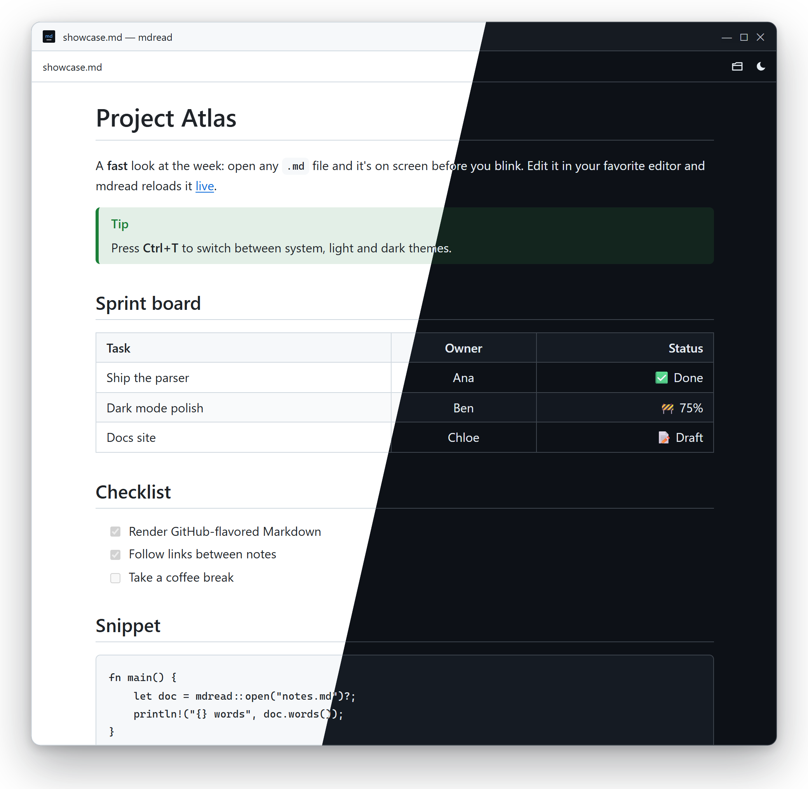

The fast Markdown reader for Windows
mdread opens .md files the moment you double-click them. Clean typography, light and dark themes, and live reload while you edit. No editor, no clutter, no account.

mdread at a glance
- What it is
- A free, open-source Markdown (MD) reader and viewer for Windows
- Runs on
- Windows 10 and Windows 11 (x64)
- Latest version
- 0.1.0, released October 17, 2026
- Download size
- 1.5 MB installer, or a 4.9 MB portable exe
- Price and license
- Free, MIT license, no account or telemetry
- Markdown support
- CommonMark plus GitHub-flavored Markdown: tables, task lists, footnotes, strikethrough, autolinks, alerts
- Built with
- Rust (pulldown-cmark), Tauri 2 and the WebView2 runtime built into Windows
- Source code
- github.com/mmoselhy/md-reader
Everything a Markdown viewer needs. Nothing it doesn't.
A reader, not an editor: keep writing in VS Code, Notepad or Obsidian, and read the result in mdread.
Opens instantly
Rendered natively in Rust and shown through the WebView2 built into Windows. Even a 1 MB file opens as fast as a tiny one.
Light & dark
Follows your Windows theme, or switch with Ctrl+T. It never flashes white when it opens.
Live reload
Save in any editor and the page updates instantly, right where you were reading.
GitHub-flavored
Tables, task lists, footnotes, strikethrough, autolinks and [!NOTE] alerts. Front matter is hidden.
Linked notes
Relative images just work. Links to other .md files open in mdread, with back and forward.
Safe by default
Scripts in Markdown never run, and links to local programs are shown in Explorer, never executed.
How to open a .md file on Windows
Windows 11's Notepad can format basic Markdown while you edit. For a dedicated reader with GitHub-style rendering, themes and live reload, mdread takes under a minute to set up.
- Download and run the installer. It installs for your user only, so no admin rights are needed.
- Double-click any
.mdfile, or drag it onto the mdread window, or press Ctrl+O. - Make it the default (optional): right-click a
.mdfile → Open with → Choose another app → mdread → Always.
Ways to read Markdown on Windows
Pick the right tool for the job. mdread is the one built only for reading.
| Tool | What it is | Best for |
|---|---|---|
| mdread | Dedicated, read-only Markdown viewer | Opening and reading .md files fast, with live reload while you edit elsewhere |
| Notepad (Windows 11) | Built-in text editor with basic Markdown formatting | Quick edits to a file |
| VS Code | Code editor with a Markdown preview pane | Writing docs inside a coding project |
| Typora, Obsidian | Markdown editors and note-taking apps | Writing and organizing lots of notes |
Keyboard first
Everything is one keystroke away. There's no settings screen to dig through.
| Keys | Action |
|---|---|
| Ctrl+O | Open a file |
| Ctrl+T | Cycle theme: system → light → dark |
| Ctrl+= / Ctrl+- / Ctrl+0 | Text size up / down / reset |
| F5 | Reload |
| Alt+← / Alt+→ | Back / forward through linked notes |
Built for speed
A native Rust renderer, no bundled browser, and a window that appears only once the content is painted.
Measured on the release build on one Windows 11 machine; your numbers will vary. Method in the spec.
Questions
Short answers to what people ask most.
What is a good lightweight Markdown viewer for Windows?
If you only need to read .md files, a dedicated viewer such as mdread opens fastest: it's a free, open-source Markdown reader for Windows 10 and 11 with GitHub-flavored rendering, light and dark themes and live reload, in a 1.5 MB installer. If you mainly write Markdown, an editor such as VS Code, Typora or Obsidian is the better fit.
Can Windows open .md files without extra software?
Partly. On Windows 11, Notepad can format basic Markdown while you edit. On Windows 10 a .md file opens as plain text. mdread adds a dedicated reader with GitHub-style rendering, themes, linked notes and live reload.
How do I open a .md file on Windows?
Install mdread, then double-click any .md file, drag it onto the mdread window, or press Ctrl+O inside mdread. To make mdread the default, right-click a .md file, choose Open with → Choose another app, pick mdread and tick Always use this app.
Is mdread free?
Yes. mdread is free and open source under the MIT license, with no ads, accounts or telemetry.
Does mdread work offline?
Yes. Documents are read and rendered locally on your PC. Only images that a document links from the web need an internet connection.
Why does Windows SmartScreen warn when I run it?
The builds aren't code-signed yet, so SmartScreen doesn't recognize the publisher. Choose More info, then Run anyway. SHA-256 checksums of every download are published with each release.
What Markdown features does mdread support?
CommonMark plus GitHub-flavored Markdown: tables, task lists, strikethrough, footnotes, autolinks and alerts such as > [!NOTE]. YAML front matter is hidden. Relative images and links to other Markdown files work.
Is there a Mac or Linux version?
Not yet. mdread targets Windows 10 and 11 for now. Watch the GitHub repo for updates.
Read Markdown the fast way
Free, open source, and about a 1.5 MB download.